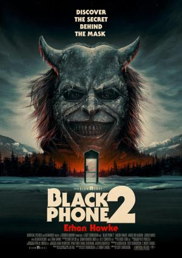

El mundo del cine está en constante evolución, y siempre hay algo nuevo que descubrir. Desde estrenos esperados hasta anuncios exclusivos, aquí te traemos las últimas novedades para que no te pierdas nada de lo que está por venir.
Últimos Estrenos en Cartelera
Ya están disponibles las películas más recientes que están dando de qué hablar. Cada título viene acompañado de una crítica especializada para que puedas conocer más antes de ir al cine. Haz clic en cada estreno para leer la reseña completa y descubrir si es la próxima película que no te puedes perder.
Black Phone 2

"Una secuela fantástica. Es una película que no se contenta con hacer lo mismo, pero más grande, sino que explora nuevas vías y añade a la experiencia de la primera película de manera sorprendente..."
"La película más divertida, furiosa y visceral de Paul Thomas Anderson y la más puramente entretenida al acabar de verla uno se siente algo aturdido, rebosante de euforia y, sí, sintiendo gratitud..."
"Es original. Es una locura. Y es un raro regalo sentirse sorprendido como periodista de género en estos días. Esto es exactamente por lo que me encanta el terror... o lo que demonios sea esta película..."
"Brillante prodigio de cine sutil la nueva propuesta de la directora, fiel a su ideario de cine transparente y emocionante hasta doler, otorga un relato que vibra en cada personaje, en cada desengaño..."
"Espléndido debut de Laura Carreira... Una de las virtudes de la película es que nunca castiga a Aurora. No sufre un rosario de desgracias, está rodeada de gente que la ayuda y la acompaña, y que están en una situación muy parecida..."
"Un alegato muy sentido y humanamente hermoso. Un viaje emocional sin lecciones ni doctrina por una historia de desencuentros sucesivos que evidencia los estigmas que rodean la sordera. Donde descubres, como..."